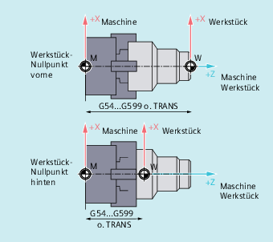
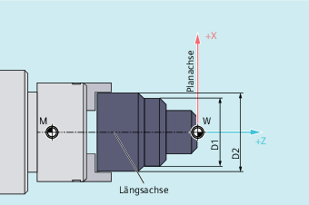

Die beiden aufeinander senkrecht stehenden Geometrieachsen werden üblicherweise bezeichnet als:
Längsachse | = Z-Achse (Abszisse) |
Planachse | = X-Achse (Ordinate) |
Während der Maschinen-Nullpunkt fest vorgegeben ist, ist die Lage des Werkstück-Nullpunkts auf der Längsachse frei wählbar. Im Allgemeinen liegt der Werkstück-Nullpunkt an der Vorder- oder Hinterseite des Werkstücks.
Sowohl Maschinen- als auch Werkstück-Nullpunkt liegen auf Drehmitte. Die einstellbare Verschiebung in der X-Achse ergibt sich damit zu Null.
M | Maschinen-Nullpunkt |
W | Werkstück-Nullpunkt |
| Längsachse |
| Planachse |
| Aufruf für die Lage des Werkstück-Nullpunkts |
Für die Planachse erfolgen die Maßangaben im Allgemeinen als Durchmesser-Angaben (doppeltes Wegmaß gegenüber den anderen Achsen):
Welche Geometrieachse als Planachse dient, ist im Maschinendatum festzulegen (→ Maschinenhersteller!).